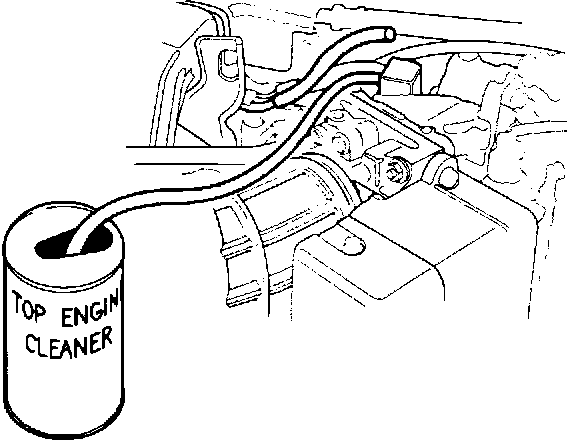

Engine - Knock After A Cold Start At 1200-1500 RPM
BULLETIN NO.93-006
YEAR
1991-93
MODEL
LEGEND
VIN APPLICATION
See VEHICLES
AFFECTED
April 13, 1993
Cold Engine Knock
SYMPTOM
A metallic knocking noise is heard at 1,200-1,500 rpm when accelerating lightly right after a cold start. This noise disappears when the engine reaches normal operating temperature.
PROBABLE CAUSE
Carbon buildup in the piston ring land causes the ring to bind, allowing the piston to slap against the cylinder wall.
VEHICLES AFFECTED
Sedan
1991: All
1992: All
1993: thru VIN JH4KA7 ... PC005500
Coupe
1991: All
1992: All
1993: None
DIAGNOSIS
Use GM Top Engine Cleaner (see REQUIRED MATERIALS) to determine if the knocking is caused by a binding piston ring.
1. Disconnect the No. 21 hose at the base of the throttle body.
2. Connect a long hose to the throttle body base.

3. Start the engine. Keep it running at 800-1,000 rpm, then place the hose in the Top Engine Cleaner. Run the engine until the can is empty, then immediately shut it off.
4. Reinstall the No. 21 hose. Let the car sit for 1 to 2 hours.
5. Test drive the car in a lower gear above 3,000 rpm for five minutes. This will remove the carbon loosened by the cleaner.
6. Allow the engine to cool down completely. Start the cold engine and accelerate lightly.
^ If the symptom still exists, binding rings are not the problem. Isolate and repair the cause using normal procedures.
^ If you do not hear any knocking, proceed with CORRECTIVE ACTION.
CORRECTIVE ACTION
Replace the piston rings with the new ring sets listed under PARTS INFORMATION. Refer to Sections 6 and 7 of the appropriate service manual for the engine disassembly/reassembly procedure.
Disassembly/Reassembly Notes
^ Mark the positions of the pistons/rods/caps as they are removed so you can install them in the same positions. The pistons and bearings are individually sized to fit.
^ Do not use mechanical carbon removal methods, such as scrapers or wire brushes, to remove carbon from the piston heads and ring grooves. Use only carburetor cleaner or parts dip.
^ Do not hone the cylinder walls. The factory surface finish is better than what can be achieved with a hand-held hone.
^ Install the ring marked T1 in the top ring groove and the ring marked T2 in the second groove.
^ Apply a liberal amount of clean engine oil to the pistons and rod bearings during reassembly.
^ Reinstall the original rod bearings.
Inform the car's owner to follow the new car break-in recommendations in the Owner's Manual.
PARTS INFORMATION
Piston Ring Set (6 required) 13011-PY3-003
Cylinder Head Gasket, Left 12251-PY3-003
Cylinder Head Gasket, Right 12261-PY3-003
Intake Manifold Gasket, Left 17106-PY3-003
Intake Manifold Gasket, Right 17105-PY3-003
EGR Pipe Packing 18721-PR7-A01
Air Suction Pipe Packing 18766-PY3-A01
REQUIRED MATERIALS
GM Top Engine Cleaner:
Purchase from any General Motors dealer, GM part number 105002. (This number is for reference only, do not put it in the warranty claim.)
WARRANTY CLAIM INFORMATION
In warranty:
The normal warranty applies.
Out of warranty:
Any repair performed after warranty expiration may be eligible for goodwill consideration by the District Service Manager. You must request consideration, and get the DSM's decision, before starting work.
Operation number: 111121
Flat rate time: 17.7 hours (includes 0.5 hour for diagnosis)
Failed P/N: 13011-PY3-004
Defect code: 042
Contention code: B07